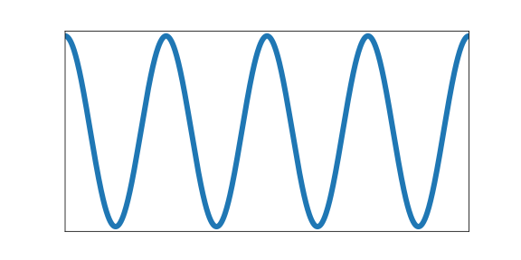
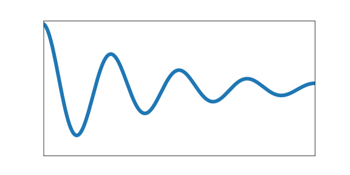
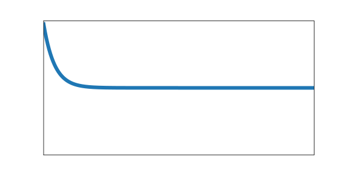

Introduction
Welcome to the user manual for VirtualBow!
This manual will help you understand how to use this software for designing bows, simulating their performance and interpreting the results. Like many other simulation tools, VirtualBow consists of three distinct components: A model editor, a solver and a result viewer.
-
The model editor is the most important part of the application from a user's perspective. Here you can create, edit and save your designs, which will be stored as
.bowfiles. -
The solver does the actual work of running a simulation. It takes a
.bowfile, performs the required calculations and saves the results as a.resfile. -
Finally, the result viewer is used to open and visualize the
.resfiles produced by the solver. Here you can view the simulation results and evaluate your designs.
The layout of this manual follows this parition. The coming chapters will therefore explain each of these components in more detail, starting with the model editor. For support, feedback or to get the latest version of the software please visit the project's website at
Note: Please keep in mind that VirtualBow is still under development. The simulation results are still largely unverified and should not be taken at face value yet, although many users already reported good agreement.
Model Editor
The model editor is the first thing you will see when opening VirtualBow. Here you can design your bows, specify their physical properties and start simulations to investigate their performance.
Loading and saving files
Use the file menu and/or the toolbar buttons on the top to create, open and save bow models.
Bow models are stored as .bow files on disk, which contain all the physical parameters of the bow.
You could share those files with other users and they would be able to open and view your creations.
Note: VirtualBow's goal is to keep compatibility with older
.bowfiles as much as possible, so you should be able to open files that were created with older versions. Keep in mind though that saving will overwrite the file in the new format.
Editing the bow model
The main view of the editor is a 3D visualization of the bow's current geometry. Use the mouse to rotate (left button), shift (middle button) and zoom (mouse wheel) the perspective. More view options are available through the buttons on the bottom. Besides this 3D view, the editor interface contains three additional panels:
-
Model: The model tree on the top left shows how the bow model is organized, with various categories of physical properties. If an item in the model tree is selected, its details are shown in the Properties and/or the Graph panels. Some categories can be edited in the tree by adding, removing or renaming items, namely Materials, Layers and Profile.
-
Properties: The property editor shows the details of the currently selected item in the model tree. Here you can view and edit the physical properties of the bow model.
-
Graph: The graph view will show any graphs/plots that are associated with the selected item in the model tree. The graphs reflect the current properties and change as the properties are being edited.
Note: The physical units that are used throughout the model editor can be changed under Options - Units.
Running Simulations
Simulations can be started with the Simuate menu or by clicking one of the toolbar buttons. Any changes to the bow are automatically saved and the VirtualBow solver is invoked on the model file. There are two different simulation modes:
-
Statics: The static simulation analyzes the bow as it is being drawn from brace height to full draw. One of the results is the force/draw curve, for example. This mode is called static since the bow is considered to be in static equilibrium at each stage of the draw.
-
Dynamics: The dynamic simulation analyzes the bow and arrow in motion as the string is released from full draw. It adds things like arrow speed and degree of efficiency to the results. Since it requires the initial state of the bow at full draw, the dynamic simulation will always be preceded by a static simulation as well.
The simulation results are stored as a .res file next to the model file and automatically opened in the result viewer for analysis.
Comments
The comments are the first item in the model tree and are only used for documentation. Any notes about the bow, its paramters or the simulation results can be added here.
Settings
The settings can be used for tweaking the simulation. Usually the default values should be fine though, so if you're reading this manual for the first time you might want to skip this section.

Since the default settings are meant to be a good general choice, they favor accuracy and reliability over simulation speed. So for specific use cases it could make sense to find more efficient settings. Think about running a large number of scripted simulations, for example. On the other hand, even the default settings might sometimes fail with certain bow designs such that different settings have to be used.
The settings are divided into general settings that affect both simulation modes as well as specific settings for the static and dynamic simulations.
General
-
Limb elements: Number of finite elements that are used to approximate the limb. More elements increase the accuracy but also the computing time.
-
String elements: Number of finite elements that are used to approximate the string. This number can usually be reduced if the bow has no recurve. In the case of a static analysis with no recurve it can even be set to one without losing any accuracy.
Statics
- Draw steps: Number of steps that are performed by the static simulation from brace height to full draw. This determines the resolution of the static results. You can usually decrease this value to speed up the simulation, especially if you're only interested in the dynamic results.
Dynamics
-
Arrow clamp force: The force that the arrow has to overcome in order to separate from the string. This value is chosen fairly small by default and can improve the simulation results for very light arrows.
-
Time span factor: This factor controls the time period that is being simulated. A value of 1 corresponds to the time at which the arrow passes the brace height. The default value is larger than that in order to capture some of the things that tend to happen after the arrow left the bow (e.g. the maximum forces/stresses on limb and string).
-
Time step factor: When simulating the dynamics of the bow, the program will repeatedly use the current state of the bow at time stem:[t] to calculate the next state at time stem:[t + \Delta t] where stem:[\Delta t] is some small timestep. We want this timestep to be as large as possible to keep the required number of steps low. But it still has to be small enough to get an accurate and stable solution. The program will try to estimate this optimal timestep, but to be on the safe side the estimation is multiplied with a factor between 0 and 1 that you can choose here.
-
Sampling rate: The sampling rate limits the time resolution of the dynamic results. This is done because the dynamic simulation usually produces much finer grained data than is actually useful. Not including all of that in the final output reduces the size of the result files and the simulation time.
Dimensions
The dimensions define some overall lengths and angles of the bow, including an optional stiff middle section.
Draw
-
Brace height: Distance between the deepest point of the handle and the string at rest
-
Draw length: Distance between the deepest point of the handle and the string at full draw
Handle
-
Length: Optional length of a stiff middle section (grip/riser) between the limbs
-
Setback: Distance between the deepest point of the grip and the attachment point of the limbs to the middle section
-
Angle: Angle at which the limbs are attached to the middle section
See the image below for a visual definition of the dimensions.
Materials
This is a list of materials that can later be assigned to the layers of the bow.
If the Materials category in the model tree is selected, the buttons (, , , ) can be used to add, remove and reorder materials. Materials can be renamed by double-clicking and entering a new name.
For each material, the following properties are needed:
-
Color: Color of the material (only used for display)
-
Rho: Density (mass per unit volume)
-
E: Elastic modulus (measure of stiffness)
For synthetic materials like e.g. fiber-reinforced composites you can often find the mechanical properties in a datasheet provided by the manufacturer. Natural materials like wood are more difficult, because their properties can vary quite a bit. Average numbers can be found at http://www.wood-database.com and other websites, which should be a good starting point. The alternative is to determine the material properties by experiment with a bending test. For more information on that see Appendix C.
Layers
Layers define the makeup of the bow in the thickness/height direction. A bow can have multiple layers of different materials or only a single layer (self bows).
If the Layers category in the model tree is selected, the buttons (, , , ) can be used to add, remove and reorder layers. Layers can be renamed by double-clicking and entering a new name.
Each layer consists of a material and a height/thickness distribution. The material can be selected from the drop-down list, which shows all materials that were previously added under Materials.
The height distribution is defined by a table of relative length and height values. Each table row must contain a relative length along the limb (from 0% to 100%) and the corresponding layer height. Layer heights may be zero over portions of the length. This is useful for modelling layers that don't cover the whole limb. Common examples for this are fadeouts and tip wedges.
The actual height distribution is constructed as a smooth curve (monotone cubic spline) passing through the supplied values and is shown in the Graph panel. You can use the context menu for additional options on the plot, like showing/hiding control points or adding an overlay image.
Profile
The profile defines the shape of the (back of the) bow in unbraced state.
If the Profile category in the model tree is selected, the buttons (, , , ) can be used to add, remove and reorder segments of different types that make up the profile curve (e.g. lines, arcs and more). The properties of each segment depend on its type and are explained below. The resulting shape of the profile curve is shown in the Graph panel. You can use the context menu for additional options on the plot, like showing/hiding control points, curvature or adding an overlay image.
Note: The profile curve always starts at (0, 0) and with a horizontal angle. Any offsets in the actual bow can be achieved with the parameters in Dimensions.
Line Segments
The line segment is simply a straight line. Its only editable property is the length of the line.
Arc Segments
The arc segment describes a circular arc with given length and radius.
Note: The radius can be positive or negative, which makes the arc curve into different directions. It can also be zero, in this case the arc turns into a straight line.
Spiral Segments
The spiral segment describes an Euler spiral, a curve that linearly transitions between two curvatures. It is therefore well suited for making smooth transitions between lines and arcs or arcs of different radius. It is defined by a starting radius, and end radius and a length.
Note: The start and end radius can be positive, negative or zero (similar to the arc segment).
Spline Segments
The spline segment interpolates a table of (x, y) values with a cubic spline.
The values are measured relative to the starting point of the segment/the end point of the previous segment.
Width
This defines the limb's width along its length. The width is the same for all layers of the bow.
The width distribution is defined by a table of relative length and width values. Each table row must contain a relative length along the limb (from 0% to 100%) and the corresponding width. The actual width distribution is constructed as a smooth curve (monotone cubic spline) passing through the supplied values and is shown in the Graph panel. You can use the context menu for additional options on the plot, like showing/hiding control points or adding an overlay image.
String
The string is defined by its material properties and the number of strands being used. Its length is determined automatically from the brace height that was set under Dimensions.
The following three properties are required:
-
Strand density: Linear density of a single strand (mass per unit length)
-
Strand stiffness: Stiffness of a single strand (force per unit strain)
-
Number of strands: Total number of strands in the string
Note: Mass and stiffness of the string can be important for dynamic analysis. The effect on the static results however is small, provided that the stiffness is high enough to prevent significant elongation.
The linear density of a string material can be easily determined with an accurate scale (weight divided by length), the stiffness however is more difficult to obtain. Manufacturers usually don't publish this number. The table below shows the results of tensile tests for three common bow string materials. They were done by the German Institutes for Textile and Fiber Research 1 in July 2018.
| Material | Density [kg/m] | Breaking strength [N] | Elongation at break [%] | Stiffness [N/100%] |
|---|---|---|---|---|
| Dacron B50 | 370e-6 | 180 | 8.5 | 2118 |
| Fastflight Plus | 176e-6 | 318 | 2.9 | 10966 |
| BCY 452X | 192e-6 | 309 | 2.5 | 12360 |
Table: Material properties for common string materials. The stiffness values are a linear estimation from breaking strength and elongation.
Masses
Here you can set the mass of the arrow as well as some other optional masses.
Only the mass of the arrow is actually required. The other ones account for optional weights at various points of the bow and may be set to zero if not needed. Masses in general only have an effect in dynamic analysis.
-
Arrow: Mass of the arrow
-
String center: Additional masses at the string center (e.g. serving, nocking point)
-
String tip: Additional masses at the ends of the string (e.g. serving)
-
Limb tip: Additional masses at the limb tips (e.g. tip overlays, extending nocks)
Damping
Damping allows to account for energy dissipation, for example due to internal friction/hysteresis of the materials. It only has an effect in dynamic analysis.
Since modelling all the different forms of energy dissipation in a bow in an exact way would be too complex, the damping is reduced to two empirical values: The damping ratio of the Limbs and the damping ratio of the String.
The damping ratio characterizes how quickly oscillations decay over time:
-
An oscillation with a damping ratio of 0% is undamped, it doesn't dissipate any energy and just keeps going with a constant amplitude.
-
The higher the damping ratio the faster the amplitudes decay over time, losing energy with each oscillation.
-
Once the damping ratio reaches 100% there is no longer any oscillation (no overshoot), this is called critical damping.
See also the table below for a visualization of those three cases.
| Damping | Amplitude |
|---|---|
| 0% |  |
| 10% |  |
| 100% |  |
Note: The damping ratios of a bow's limbs and string are mostly empirical and there isn't yet much practical experience. Realistic values are probably in the range of 1 - 10% though.
Note: Due to numerical issues, high damping ratios (> 10%) might not work very well right now.
Note: In more technical terms, the limb's damping ratio applies to its first eigenmode in unbraced state and the string's damping ratio applies to its first eigenmode in longitudinal direction.
Result Viewer
The result viewer is used to open and visualize simulation results that are stored in .res files.
It is launched automatically by the model editor when a simulation has finished, but it can also be used as a standalone application.

After loading a result file you can use the buttons on the bottom right corner of the window to switch between static and dynamic results, if available. The results themselves are organized in different tabs, which will be explained in the next sections.
Below the tabs there is a slider where you can change the current state of the bow that is being viewed, either by draw length in the static case or by time in the dynamic case. This value applies to all of the tabs. Drag the slider to a specific position or use the play buttons to show the simulation results as a continuous animation. The input field and the dropdown menu next to it allow you to jump directly to special points in the results, for example where certain forces or stresses reach their maximum.
Note: The physical units that are used throughout the result viewer can be changed under Options - Units.
Characteristics
Shows all results that can be expressed as a single value. Some of them are specific to static or dynamic analysis, others are common in both.

Statics
-
Final draw force: The draw force of the bow at full draw
-
Drawing work: Total work done by drawing the bow. This work is stored in the bow as potential elastic energy and later partially transfered to the arrow, depending on the bow's efficiency. It is equal to the area under the force-draw curve of the bow.
-
Energy storage factor: This value indicates how good the shape of the draw curve is in terms of energy storage. It is defined as the energy stored by the bow in relation to the energy that would have been stored with a linear draw curve. The energy storage factor increases the "more convex" the shape of the draw curve is.
-
Factor < 1: The draw curve stores less energy than a linear draw curve
-
Factor = 1: The draw curve stores as much energy as a linear draw curve
-
Factor > 1: The draw curve stores more energy than a linear draw curve
-
Limb mass: Total mass of a single bow limb, including the additional tip mass
-
String mass: Total mass of the bow string, including additional masses
-
String length: Length of the string, determined by the desired brace height
Dynamics
-
Final arrow velocity: Velocity of the arrow when departing from the bow
-
Degree of efficiency: The bow's degree of efficiency, i.e. how much of the energy input (drawing work) is converted into useful output (kinetic energy of the arrow)
-
Kinetic energy arrow: Kinetic energy of the arrow on departure from the string
-
Kinetic energy limbs: Kinetic energy of the limbs on arrow departure
-
Kinetic energy string: Kinetic energy of the string on arrow departure
Common
-
Minimum and maximum stresses: Maximum stress by absolute value for each layer. Positive values indicate tension, negative values compression.
-
Maximum absolute forces: Maximum forces by absolute value. Entries are the draw force, the string force and the grip support force, i.e. the force that would be required to hold the bow handle.
Shape
Shows the shape of the limb and string as well as the position of the arrow at different stages of either the draw (statics) or the shot (dynamics). The little red circle symbolizes the back end of the arrow. You can use the slider at the bottom to change the current state of the bow or to view all states as a continuous animation.
Stress
Shows the stress distribution along the limb for each one of the layers, evaluated at the back and belly sides. Positive values indicate tension, negative values compression.
Curvature
Shows the curvature of the limb along its length. This is not the total curvature but rather the difference to the unbraced shape.
Energy
This plot shows how the energy stored in the bow develops during the simulation and how it is distributed between components (limbs, string arrow) and type of energy (potential/elastic or kinetic).
In the static case it shows how the elastic energy of the limbs and string develops during draw. No kinetic energies are shown, because they are zero in static analysis.

In the dynamic case it shows how the initial potential energy of the limbs is transferred to the arrow and other components of the bow and how much unused energy stays in the bow after the departure of the arrow.

In both cases there are three options for display that can be selected individually:
-
Stacked: Stack the energies on top of each other, so it can bee seen how they add up
-
Group by component: Group the energies only by component (limbs, string, arrow)
-
Group by type: Group the energies only by type (potential, kinetic)
Other Plots
Here you can combine arbitrary simulation results and plot them together in order to visualize things that aren't shown on any of the default plots. Examples are the draw curve of the bow (draw force over draw length) or the velocity of the arrow over time.
Data series available in static analysis:
| Data Series | Description |
|---|---|
| Draw length | Length to which the bow is drawn |
| Draw force | Draw force of the bow |
| String force (total) | Tension force in the string |
| String force (strand) | String tension per strand |
| Grip force | Force that is required to hold the grip |
| Pot. energy limbs | Potential energy of the limbs |
| Pot. energy string | Potential energy of the string |
Data series available in dynamic analysis:
| Data Series | Description |
|---|---|
| Time | Time since the release of the shot |
| Arrow position | Position of the arrow |
| Arrow velocity | Velocity of the arrow |
| Arrow acceleration | Acceleration of the arrow |
| String force (total) | Tension force in the string |
| String force (strand) | String tension per strand |
| Grip force | Force that is required to hold the grip |
| Pot. energy limbs | Potential energy of the limbs |
| Kin. energy limbs | Kinetic energy of the limbs |
| Pot. energy string | Potential energy of the string |
| Kin. energy string | Kinetic energy of the string |
| Kin. energy arrow | Kinetic energy of the arrow |
Solver
The solver is the part of VirtualBow that actually performs the required calculations. It only has a command line interface and is invoked automatically by the model editor when a simulation is started, but can also be used on its own for advanced use cases.
Command Line
The VirtualBow executables are named
virtualbow-gui // Model editor
virtualbow-slv // Solver
virtualbow-post // Result viewer
The solver executable takes a .bow model file as its input, performs the simulation and saves the results as a .res file that can be opened by the result viewer.
The type of simulation (static or dynamic) as well as other options are set by the command line arguments.
The detailed usage as shown by the --help option is:
Usage: virtualbow-slv [options] input output
Options:
-?, -h, --help Displays this help.
-v, --version Displays version information.
-s, --static Run a static simulation.
-d, --dynamic Run a dynamic simulation.
-p, --progress Print simulation progress.
Arguments:
input Model file (.bow)
output Result file (.res)
NOTE: To use the command line interfaces on Windows you have to either specify the complete path to the respective executable or add the installation directory to your PATH environment variable.
There is an option to do this automatically during installation of VirtualBow.
NOTE: On MacOS, the VirtualBow executables are hidden inside the application bundle.
They can be accessed by their full path though, or their location can be temporarily added to the PATH environment variable with the command export PATH = $PATH:/Applications/VirtualBow.app/Contents/MacOS.
Put this line into your .bash_profile if you want it to be permanently added.
File Formats
Input
The input files of the solver are .bow model files as created by the model editor.
Those files use the text based JSON1 format.
JSON (JavaScript Object Notation) is a very common exchange format for hierarchical data in the form of objects, arrays, strings, numbers and more.
Since the format is text based, it is easy to inspect and modify with a text editor.
A detailed specification of the model files can be found in Appendix A.
Output
The output files of the solver are .res result files that can be opened with the result viewer.
The result files use the binary MessagePack2 format.
MessagePack is very similar to JSON in the kind of data it can represent, but more space efficient due to being a binary format.
Unlike the input files, the output files cannot be inspected with a text editor.
A detailed specification of the model files can be found in Appendix B.
Scripting
The main use of the solver as a standalone application is the ability to write programs that automatically launch simulations and analyze the results. This is especially useful for performing design optimizations or exploring the influence of certain model parameters on the simulation results.
Scripts that interoperate with VirtualBow have to be able to call the solver via the command line interface as well as read and write the model and result files that constitute the input and output of the solver. As a consequence of the file formats, any programming language that supports JSON and MessagePack can be used. Both are fairly common formats and most languages have either built-in support or there are external libraries available.
For getting started, the following sections show how to interface with VirtualBow for some programming languages commonly used in scientific computing. Each of the examples performs the same series of basic tasks:
- Load, modify and save a model file
- Run a static simulation with the model file
- Load the result file and evaluate the maximum stress of the first layer at full draw
Python
The python example below uses two external packages, msgpack for reading the result files and numpy for evaluating the stresses.
They can be installed with pip install msgpack numpy.
import json, msgpack # Loading and saving model and result files
import numpy as np # Evaluating stresses
import subprocess # Runnig the simulation
# Load model file
with open("input.bow", "r") as file:
input = json.load(file)
# Modify model data
input["string"]["n_strands"] += 1
# Save model file
with open("input.bow", "w") as file:
json.dump(input, file, indent=2)
# Run a static simulation
subprocess.call(["virtualbow-slv", "--static", "input.bow", "output.res"])
# Load the result file
with open("output.res", "rb") as file:
output = msgpack.unpack(file, raw=False)
# Evaluate stresses
He_back = np.array(output["setup"]["limb_properties"]["layers"][0]["He_back"])
Hk_back = np.array(output["setup"]["limb_properties"]["layers"][0]["Hk_back"])
epsilon = np.array(output["statics"]["states"]["epsilon"][-1])
kappa = np.array(output["statics"]["states"]["kappa"][-1])
sigma = He_back.dot(epsilon) + Hk_back.dot(kappa)
print(sigma.max())
Matlab
This Matlab example uses the JSONLab library, which can read and write both JSON and MessagePack files.
% Load model file
input = loadjson('input.bow');
% Modify model data
input.string.n_strands = input.string.n_strands + 1;
% Save model file
savejson('', input, 'input.bow');
% Run a static simulation
system('virtualbow-slv --static input.bow output.res');
% Load the result file
output = loadmsgpack('output.res');
% Evaluate stresses
He_back = output.setup.limb_properties.layers{1}.He_back;
Hk_back = output.setup.limb_properties.layers{1}.Hk_back;
epsilon = output.statics.states.epsilon(:,end);
kappa = output.statics.states.kappa(:,end);
sigma = He_back*epsilon + Hk_back*kappa;
disp(max(sigma));
Julia
For the Julia example, two external packages are used: JSON for loading model files and MsgPack for loading result files.
They can be installed with julia> import Pkg; Pkg.add("JSON"); Pkg.add("MsgPack").
using JSON # Loading and saving model files
using MsgPack # Loading result files
# Load model file
stream = open("input.bow", "r")
input = JSON.parse(stream)
close(stream)
# Modify model data
input["string"]["n_strands"] += 1
# Save model file
stream = open("input.bow", "w")
JSON.print(stream, input, 2)
close(stream)
# Run a static simulation
run(`virtualbow-slv --static input.bow output.res`)
# Load the result file
stream = open("output.res", "r")
output = unpack(stream)
close(stream)
# Evaluate stresses
He_back = hcat(output["setup"]["limb_properties"]["layers"][1]["He_back"]... )
Hk_back = hcat(output["setup"]["limb_properties"]["layers"][1]["Hk_back"]... )
epsilon = output["statics"]["states"]["epsilon"][end]
kappa = output["statics"]["states"]["kappa"][end]
sigma = He_back*epsilon + Hk_back*kappa
println(max(sigma...))
Appendix
Model Files
Note: The following specification is subject to change. Scripts that work directly with
.bowfiles should therefore expect incompatibilities with new releases of VirtualBow.
| Field | Type | Unit | Description |
|---|---|---|---|
| version | String | -- | VirtualBow version number |
| comment | String | -- | User comments |
| settings { | |||
| n_limb_elements | Integer | -- | Number of limb elements |
| n_string_elements | Integer | -- | Number of string elements |
| n_draw_steps | Integer | -- | Number of draw steps |
| arrow_clamp_force | Double | -- | Arrow clamp force |
| time_span_factor | Double | -- | Time span factor |
| time_step_factor | Double | -- | Time step factor |
| sampling_rate | Double | -- | Sampling rate |
| } | |||
| dimensions { | |||
| brace_height | Double | m | Brace height |
| draw_length | Double | m | Draw length |
| handle_length | Double | m | Handle length |
| handle_setback | Double | m | Handle setback |
| handle_angle | Double | m | Handle angle |
| } | |||
| materials [ | |||
| { | |||
| name | String | Name | |
| color | String | Color | |
| rho | Double | kg/m | Density |
| E | Double | Pa | Elastic modulus |
| } | |||
| { | |||
| ... | |||
| } | |||
| ] | |||
| layers [ | |||
| { | |||
| name | String | Name | |
| material | Integer | Material index | |
| height | Double[][] | -- , m | Table of relative length and height |
| } | |||
| { | |||
| ... | |||
| } | |||
| ] | |||
| profile [ | |||
| { | |||
| type: "line" | String | Line segment | |
| parameters { | |||
| length | Double | m | Length |
| } | |||
| } | |||
| { | |||
| type: "arc" | String | Arc segment | |
| parameters { | |||
| length | Double | m | Length |
| radius | Double | m | Radius |
| } | |||
| } | |||
| { | |||
| type: "spiral" | String | Spiral segment | |
| parameters { | |||
| length | Double | m | Length |
| r_start | Double | m | Start radius |
| r_end | Double | m | End radius |
| } | |||
| } | |||
| { | |||
| type: "spline" | String | Spline segment | |
| parameters { | |||
| points | Double[][] | m , m | List of (x, y) points |
| } | |||
| } | |||
| { | |||
| ... | |||
| } | |||
| ] | |||
| width | Double[][] | -- , m | Table of relative length and width |
| string { | |||
| strand_stiffness | Double | N | Stiffness of the string material |
| strand_density | Double | kg/m | Density of the string material |
| n_strands | Integer | -- | Number of strands |
| } | |||
| masses { | |||
| arrow | Double | kg | Mass of the arrow |
| string_center | Double | kg | Additional mass at string center |
| string_tip | Double | kg | Additional mass at string tips |
| limb_tip | Double | kg | Additional mass at limb tips |
| } | |||
| damping { | |||
| damping_ratio_limbs | Double | -- | Damping ratio of the limbs |
| damping_ratio_string | Double | -- | Damping ratio of the string |
| } |
Result Files
Note: The following specification is subject to change. Scripts that work directly with
.resfiles should therefore expect incompatibilities with new releases of VirtualBow.
Note: For space efficiency reasons, the stress values for each layer aren't stored directly in the result files. Instead, each layer has two constant matrices \(H_{e\mathrm{\ (back/belly)}}\) that relate the longitudinal strains \(\varepsilon\) to the resulting stresses at the back or belly side of the layer as well as two matrices \(H_{k\mathrm{\ (back/belly)}}\) that do the same for the bending curvature \(\kappa\). The total stress is the sum of the stresses due to longitudinal strain and bending curvature and can be calculated as \[\sigma_\mathrm{back} = H_{e,\mathrm{\ back}} \cdot \varepsilon + H_{k,\mathrm{\ back}} \cdot \kappa\] \[\sigma_\mathrm{belly} = H_{e,\mathrm{\ belly}} \cdot \varepsilon + H_{k,\mathrm{\ belly}} \cdot \kappa\] where the dot (\(\cdot\)) represents a matrix-vector multiplication. The result is a vector of stresses corresponding to the nodes of the layer.
P: Number of limb nodes
Q: Number of string nodes
R: Number of layer nodes
| Field | Type | Unit | Description |
|---|---|---|---|
| setup { | |||
| string_length | Double | m | Length of the string |
| string_mass | Double | kg | Mass of the string, including additional masses |
| limb_mass | Double | kg | Mass of the limb, including additional masses |
| limb_properties { | |||
| length | Double[P] | m | Arc lengths of the limb nodes (unbraced) |
| angle | Double[P] | rad | Rotation angles of the limb nodes (unbraced) |
| x_pos | Double[P] | m | X coordinates of the limb nodes (unbraced) |
| y_pos | Double[P] | m | Y coordinates of the limb nodes (unbraced) |
| width | Double[P] | m | Cross section width |
| height | Double[P] | m | Cross section height (all layers) |
| rhoA | Double[P] | kg/m | Linear density of the sections |
| Cee | Double[P] | N | Longitudinal stiffness of the sections |
| Ckk | Double[P] | Nm | Bending stiffness of the sections |
| Cek | Double[P] | Nm | Coupling between bending and elongation |
| layers [ | |||
| { | |||
| length | Double[R] | m | Arc lengths of the layer nodes |
| He_back | Double[R][P] | N/m | Stress evaluation matrix (back) |
| Hk_back | Double[R][P] | N/m | Stress evaluation matrix (back) |
| He_belly | Double[R][P] | N/m | Stress evaluation matrix (belly) |
| Hk_belly | Double[R][P] | N/m | Stress evaluation matrix (belly) |
| } | |||
| { | |||
| ... | |||
| } | |||
| ] | |||
| } | |||
| } | |||
| statics { | |||
| final_draw_force | Double | N | Final draw force |
| drawing_work | Double | J | Drawing work |
| energy storage factor | Double | -- | Energy storage factor |
| max_string_force_index | Integer | -- | Simulation state with maximum absolute string force |
| max_grip_force_index | Integer | -- | Simulation state with maximum absolute grip force |
| max_draw_force_index | Integer | -- | Simulation state with maximum absolute draw force |
| min_stress_value | Double[] | Pa | Minimum stress for each layer |
| min_stress_index | Integer[][] | -- | Simulation state and layer node for each minimum stress value |
| max_stress_value | Double[] | Pa | Maximum stress for each layer |
| max_stress_index | Integer[][] | -- | Simulation state and layer node for each maximum stress value |
| states { | |||
| ... | Sequence of bow states (see table below) | ||
| } | |||
| } | |||
| dynamics { | |||
| final_pos_arrow | Double | m | Position of the arrow at departure |
| final_vel_arrow | Double | m/s | Velocity of the arrow at departure |
| final_e_kin_arrow | Double | J | Kinetic energy of the arrow at departure |
| final_e_pot_limbs | Double | J | Potential energy of the limbs at arrow departure |
| final_e_kin_limbs | Double | J | Kinetic energy of the limbs at arrow departure |
| final_e_pot_string | Double | J | Potential energy of the string at arrow departure |
| final_e_kin_string | Double | J | Kinetic energy of the string at arrow departure |
| efficiency | Double | -- | Degree of efficiency |
| max_string_force_index | Integer | -- | Simulation state with maximum absolute string force |
| max_grip_force_index | Integer | -- | Simulation state with maximum absolute grip force |
| arrow_departure_index | Integer | -- | Simulation state at which the arrow departs with the string |
| min_stress_value | Double[] | Pa | Minimum stress for each layer |
| min_stress_index | Integer[][] | -- | Simulation state and layer node for each stress value |
| max_stress_value | Double[] | Pa | Maximum stress for each layer |
| max_stress_index | Integer[][] | -- | Simulation state and layer node for each stress value |
| states { | |||
| ... | Sequence of bow states (see table below) | ||
| } | |||
| } |
N: Number of simulation steps
P: Number of limb nodes
Q: Number of string nodes
| Field | Type | Unit | Description |
|---|---|---|---|
| states { | |||
| time | Double[N] | s | Time |
| draw_length | Double[N] | m | Draw length |
| draw_force | Double[N] | N | Draw force |
| string_force | Double[N] | N | String force (total) |
| strand_force | Double[N] | N | String force (strand) |
| grip_force | Double[N] | N | Grip force |
| pos_arrow | Double[N] | m | Arrow position |
| vel_arrow | Double[N] | m/s | Arrow velocity |
| acc_arrow | Double[N] | m/s | Arrow acceleration |
| x_pos_limb | Double[N][P] | m | X coordinates of the limb nodes |
| y_pos_limb | Double[N][P] | m | Y coordinates of the limb nodes |
| angle_limb | Double[N][P] | rad | Rotation angles of the limb nodes |
| epsilon | Double[N][P] | -- | Longitudinal strain at the limb nodes |
| kappa | Double[N][P] | m | Bending curvature at the limb nodes |
| x_pos_string | Double[N][Q] | m | X coordinates of the string nodes |
| y_pos_string | Double[N][Q] | m | Y coordinates of the string nodes |
| e_pot_limbs | Double[N] | J | Potential energy of the limbs |
| e_kin_limbs | Double[N] | J | Kinetic energy of the limbs |
| e_pot_string | Double[N] | J | Potential energy of the string |
| e_kin_string | Double[N] | J | Kinetic energy of the string |
| e_kin_arrow | Double[N] | J | Kinetic energy of the arrow |
| } |
Bending Test
A bending test is a good way to experimentally determine the elastic modulus \(E\) of a material. Starting point is a material sample with a constant width \(w\) and height \(h\). It is important that the dimensions, especially the height, are fairly precise, since they have a large influence on the final result.
The useful length \(l\) of the sample should be much larger than the cross section dimensions such that it can bend enough for easy measuring while still staying in the elastic range of the material. On the other hand, the sample shouldn't be so long that it bends significantly under its own weight either. A suggestion would be \(l \ge 100 \cdot h\).
To perform the test, the sample is either clamped on one end, as shown in Clamped Setup, or placed between two supports as shown in Three-point Setup. It is then subjected to a force \(F\) and the resulting deflection \(s\) is measured. Finally the elastic modulus can be calulated from the measured deflection depending on the chosen setup.
A good way to apply an accurate force is to use a known weight \(m\), suspended for example on a thread, and calculate the force as \(F = m \cdot g\) with \(g=9.81\frac{m}{s^2}\). Alternatively, an accurate bow/hanging scale might also work.
Clamped Setup

In this setup the sample is clamped on one end and the force is applied on the free end. The elastic modulus can be calculated as
\[E = \frac{Fl^3}{3Is} = \frac{4Fl^3}{wh^3 s}\]
Three-point Setup
In this setup the sample is placed between two rolling supports with distance \(l\) and the force is applied in the middle. The elastic modulus can be calculated as
\[E = \frac{Fl^3}{48Is} = \frac{Fl^3}{4wh^3 s}\]
Tips & Tricks
This section contains various notes about useful features of VirtualBow that didn't reall fit anywhere else in this manual.
Units
Manually converting between units is tedious and error-prone. That's why all inputs and outputs in VirtualBow have a configurable unit that can be changed under Options - Units.
In this dialog you can select units for different categories of values. Changing the unit for Length, for example, will change the unit everywhere where lengths are shown (e.g. width, layer height, dimensions). There are also two pre-defined sets of defaults, one for SI units and one for US units. You can use those by clicking either of the buttons on the bottom left.
It is worth noting that the units only affect how values are shown in the user interface. The data in the model and result files is always stored in SI base units, so they can be exchanged with other users who might have different unit preferences.
Plots
Background images
Any plot can be given a background image. After selecting Background image... in the plot's context menu, you can load an image and adjust its position and orientation.
This feature can be used to model existing bows more easily or to compare the simulation results with actual photographs. Background images are only temporary, they are not saved with the model files.
File exports
Plots can be exported to various image and data formats using the menu entry Export as.... Supported export formats are:
-
PDF vector graphic
-
PNG image
-
BMP image
-
CSV table
Other options
Some of the plots have additional context menu entries. The profile plot, for example, has options to show or hide nodes or visualize the curvature.
Number inputs
Number input fields may seem simple, but there are a few details worth knowing to use them more effectively.
Arithmetic expressions
Most number input fields in VirtualBow accept arithmetic expressions.
This means that you can enter expressions like 1 + 5/2, press enter, and it will automatically be evaluated to 3.5.
Supported operations are +, -, *, /, ^ and grouping with ( and ).
Decimal separator
VirtualBow uses a dot (.) as the decimal separator for numbers, regardless of local conventions.
However, since some countries use a comma (,) instead, their keyboard layouts have a comma on the number block, making it cumbersome to enter numbers with a dot.
Therefore, to make things easier for such users, the comma on the number pad is automatically converted to a dot.
Scrolling
The little arrow buttons on the right of the input field can be used to increment/decrement the value. Scrolling the mouse wheel while the field is selected does the same thing, just faster. This can be used to quickly move through a whole range of values, which is especially useful when editing the bow's geometry and observing the changes in the plots and the 3d view.
Tables
Content in tables can be copied, cut, pasted and deleted using either the context menu or the standard shortcuts. Copy and paste also works between VirtualBow and other applications, for example spreadsheet software like Excel or LibreOffice Calc.